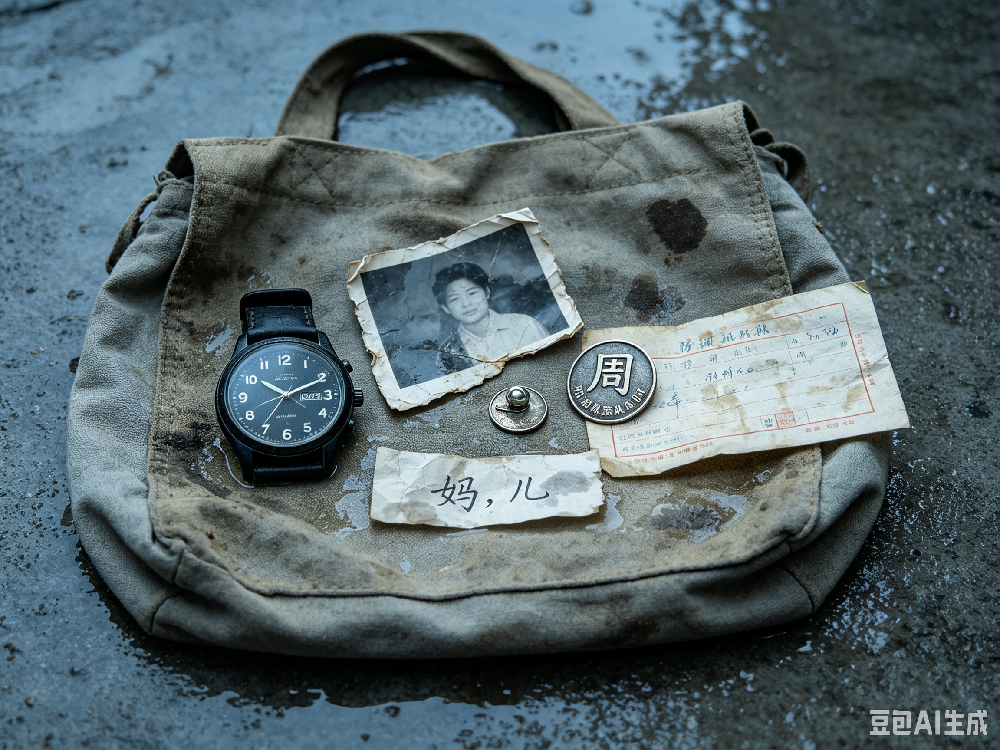

遗物袋
A-05 · 编号栏被扯断 · 1998 年 7 月

物证 A-05 · 遗物袋内容（登记照）
手表一只
指针停在 02:31 · 表带内侧刻"周"
汇款单一张（未寄出）
附言："借的，会还。" · 收款人姓名被水泡散
车票一张
怀安 → 外地 · 1998-07-25 · 票面划叉
纸条一张
字迹被水晕开 · 只认得出"妈，儿"两个字 · 未写完
手表停在 02:31，正是决口那一刻。胸针背面刻着"周"。而车票的日期是 1998 年 7 月 25 日——决口之后第四天。
一个人如果死在那夜，就不会在四天后买票。决口夜录音 里那句"替我跟我弟说一声"，说的是分别，不是遗言。
我把五件遗物摆在一起看了很久。
它们不像一个遇难者的遗物。它们像是一个人决定离开时，来不及带走的东西。
车票被划了叉——他买了，又没走。
它们不像一个遇难者的遗物，倒像是一个人决定离开时来不及带走的东西。那卷声带的登记名是决口夜录音；胸针和表带内侧都刻着一个姓——周文斌。